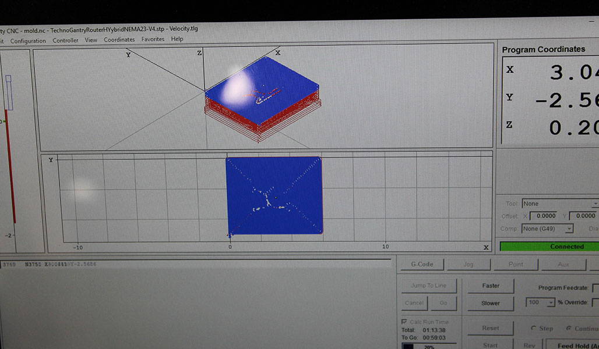

Assignment 12
For week 12 we were asked to explore molding and casting using a 2 step mold. Our first task was to model an object and machine it using a 3D milling process. I decided to make a mold of one of the many widgets I have my students model in my classes. I started by using Inventor to make the initial .ipt file.
Mould Inventor FileOnce I was satisfied with the model of my widget I uploaded the file to Autodesk Fusion 360. I am starting to really find this program to quite useful for generating g-code for both our CNC router and our Tormach PNC 440 mill. Below are the toolpaths that were generated. I chose to use the 1/4 inch end mill as I was hoping that it would do a good job of smoothing out the radius on both the x and y axis. I even took some time to tweak some of the step over and finish pass parameters.
After finishing the toolpaths and moving it to the CNC router I proceeded to mill a part. We have a local business whol donates large amount of REN shape/wood cut offs to us as he cannot use them for his large parts. I really like this material as it is very easy to machine. Can take a pretty agressive feed/speed and leaves a really smooth/clean finish for our parts. So far I have used the gray, blue and tan versions of this material. My part took a little under an hour to finish milling.

After the milling process was completed I proceeded to put sides around my milled part and used Oomoo to create a fleible silicone mold to be used for casting. The mixing of the Oomoo was really simple as we ordered two sample kits and simply mixed part A and part B together. After mixing I carefully poured the Oomoo into the mold to avoid any air bubbles. One thing I noticed was that the table that I was working on was not completely level so my mold is not 100% true.
The directions for the Oomoo state that the product should be left to cure for 24 hours. After leaving it over night and most the next day I decided to attempt to de-mold my Oomoo. At first I was a little hesitant as I didn't want to ruin anything but the silicone spray that we used as a mold release did it's job perfectly. The resulting soft/flexible mold seems to be really smooth although more dense than what I was expecting
The last step in the process was to mix up our dry stone material pour the it into the mold and let it set. After the set-up was complete we would have a casting of our original part. This went really smoothly and the part came out pretty decent. I think the only issues that I still need to sort out would be to either use a smaller diameter endmill to reduce the amount of stepping or to look into using a bull nose end mill to help smooth out the round.
This is StoneWork, a free, fully standards-compliant CSS template designed by TEMPLATED. The photos in this template are from Fotogrph. This free template is released under the Creative Commons Attribution license, so you're pretty much free to do whatever you want with it (even use it commercially) provided you give us credit for it. Have fun :)